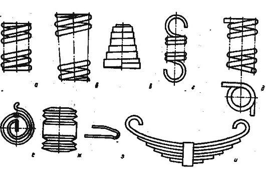
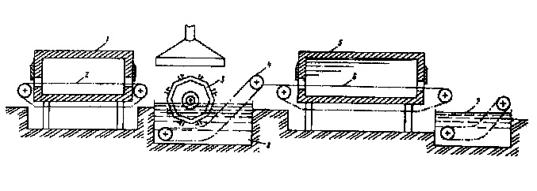

Пружины и рессоры являются упругими элементами разнообразных машин, механизмов и приборов, предназначенных для создания, восприятия или гашения ударов, колебаний, сотрясений, а также для привода подвижных частей или для измерения усилий.
По форме пружины делятся на винтовые, спиральные, тарельчатые и др.
Различные типы пружин могут эксплуатироваться при статическом приложении нагрузки (например, постоянно сжатые), при динамических нагрузках (буферные пружины) в многократных динамических нагрузках с большим числом циклов нагружения различной частоты (пружины клапанов двигателей).
Основной рабочей характеристикой пружин является их жесткость, т. е. способность деформироваться на определенный размер при заданных нагрузках. Величина и постоянство рабочих характеристик, а также отсутствие поломок и изменения размеров (проседание, растяжение) характеризуют качество пружин.
Наибольшее распространение в технике имеют винтовые пружины. Крупные винтовые пружины изготавливают из прутков диаметром более 12 мм, средние – из проволоки или прутков диаметром 1,5–12 мм. Мелкие пружины изготавливают из проволоки диаметром 0,2 –1,5 мм.
В большинстве пружин материал работает на кручение, поэтому для расчета пружин используют модуль сдвига материала. Для оценки качества пружинных материалов используют испытания на растяжение.
Преимуществом пружин из сталей общего назначения, упрочняемых холодной пластической деформацией с последующим отпуском, является простота и экономичность технологического процесса их изготовления наряду с высоким комплексом свойств, обеспечивающих длительную надежную эксплуатацию. Отсутствие закалки позволяет получить высокую точность конфигурации и размеров пружин при почти полном отсутствии поверхностного обезуглероживания и окисления, резко снижающих усталостную прочность.
Для изготовления пружин используют термически обработанную на заданный уровень прочности или холоднодеформированную, предварительно термически обработанную (обычно патентированную) проволоку или ленту. Ввиду невысокой пластичности обработанных на высокую прочность сталей из них изготавливают пружины несложной конфигурации.
Закаленная и отпущенная пружинная проволока или лента изготавливается из углеродистых (68А, У7А–У12А) и легированных сталей (65ГА, 68ГА, 50ХФА, 60С2А, 70С2ХА). Лента по уровню прочности поставляется по трем группам: 1П, 2П и 3П. С увеличением номера группы выше уровень прочности, но меньше вязкость ленты, определяемая по числу переменных гибов.
Пружины, изготовленные из термически обработанной ленты, подвергают отпуску при 240–250 °С в течение 1 ч для уменьшения внутренних напряжений и дополнительного распада остаточного аустенита. Нагрев проводят в электрических печах в воздушной среде с тем, чтобы по плоскостям среза при вырубке произошло образование тонкой окисной пленки (колоризация), которая несколько улучшает коррозионную стойкость пружин.
В большинстве случаев материалом для изготовления пружин служит проволока или лента, полученная путем холодной пластической деформации (волочением, прокаткой) заготовок с предварительно подготовленной исходной структурой. Основным предварительной термической обработки является патентирование. Полученная при этом структура тонкопластинчатого перлита позволяет выполнять холодную деформацию с высокими степенями обжатия. Сталь существенно упрочняется, сохраняя пластичность и вязкость, достаточную для навивки пружин в холодном состоянии.
Упрочнение при деформационном наклепе зависит как от состава стали и ее структуры, так и от степени деформации. Высокие пружинные свойства достигаются после деформации с большими степенями обжатия и поэтому могут быть получены на проволоке и ленте небольших сечений (диаметром или толщиной до 6–8 мм).
Наиболее высокопрочную проволоку изготовляют из сталей У7А, У8А, У9А; проволоку с повышенной прочностью – из стали 65Г. Чем выше содержание углерода в стали, тем выше прочность после патентирования и последующей холодной деформации.
Технологический процесс изготовления мелких и средних пружин включает следующие операции: холодную навивку, правку, обрубку лишних витков, заточку и шлифование торцов, термическую обработку, обжатие до соприкосновения витков, испытание пружин и проверку размеров, нанесение антикоррозионных покрытий и проверку их качества, а также окончательный контроль.
Термическая обработка пружин заключается в их отпуске. В результате отпуска повышаются предел упругости, релаксационная стойкость, усталостная прочность, снижаются остаточные напряжения и остаточная деформация пружин при нагружении, стабилизируются форма пружин и их силовые характеристики.
Режимы отпуска пружин после навивки колеблются в широких пределах. Ввиду того, что процессы при отпуске являются термически активируемыми, более низкой температуре должна соответствовать более продолжительная выдержка. Наиболее часто отпуск выполняют при температурах 175–250 °С.
Для отпуска используют печи-ванны с горячим маслом или расплавом солей. Недостатком расплавов солей является образование солевой рубашки вокруг витков, для удаления которой необходима тщательная промывка, например, в горячем содовом растворе. Можно выполнять отпуск и в электропечах со встроенными вентиляторами для интенсивной циркуляции атмосферы, обеспечивающей равномерность низкотемпературного нагрева садки.
В последние годы для подготовки исходной структуры наряду с патентированием все более широко используют нормализацию, изотермическую закалку на нижний бейнит, закалку со скоростным электроотпуском.
Для изготовления пружин, упрочняемых последующей закалкой с отпуском, используют холоднодеформированную отожженную проволоку или ленту, горячекатаный или холоднокатаный сортовой прокат или катанку. В исходном состоянии указанные полуфабрикаты не характеризуются высокой прочностью, но имеют повышенную пластичность, позволяющую изготавливать пружины сложной конфигурации. Крупные пружины изготавливают с использованием горячей деформации.
Технологический процесс изготовления пружин горячей деформацией в общем случае включает следующие операции: отрезку заготовок, оттяжку или вальцовку концов заготовок в горячем состоянии (950–1150 °С), навивку или штамповку в горячем состоянии (800–1000 °С), обрубку концов, заточку и шлифование торцов пружин (при необходимости), термическую обработку, гидропескоструйную обработку (иногда наклеп дробью), испытание пружин и проверку размеров.
Основным видом термической обработки пружин является закалка с отпуском. Закалка должна обеспечить получение в структуре мартенсита без участков троостита и с минимальным количеством остаточного аустенита. Остаточный аустенит обладает пониженным пределом упругости, а его возможное превращение в мартенсит вызывает понижение релаксационной стойкости и склонность к замедленному разрушению. В связи с этим целесообразно после закалки проводить обработку холодом.
Для снижения склонности к хрупкому разрушению и температуры вязкохрупкого перехода необходимо стремиться к получению при нагреве под закалку мелкозернистого аустенита и к снижению уровня внутренних напряжений при закалке.
Для предупреждения поверхностного окисления и обезуглероживания нагрев пружин, особенно малой толщины, следует проводить в защитной атмосфере или вакууме. Нагрев в соляных ваннах обеспечивает получение чистой поверхности, но может вызвать поверхностные повреждения, снижающие усталостную прочность, что недопустимо для пружин ответственного назначения.
Окончательные свойства определяются условиями отпуска. Режимы отпуска следует выбирать с учетом назначения и условий нагружения упругих элементов в эксплуатации. Для большинства пружин отпуск проводят при температурах, обеспечивающих высокие значения предела упругости: углеродистые стали – 200–250 °С; легированные – 300–350 °С.
Во избежание нежелательных изменений в структуре (коагуляция карбидов и др.) режим отпуска должен быть строго регламентирован по температуре в продолжительности.
Для пружин, работающих в условиях динамического нагружения, для которых возникновение внезапных или замедленных хрупких разрушений особенно опасно, определяющее значение для выбора режима отпуска приобретает также уровень пластичности и сопротивление хрупкому разрушению. В связи с этим температура отпуска повышается выше той, которая соответствует наибольшему пределу упругости.
Более высокие пределы упругости, вязкости и усталостная прочность достигаются при изотермической закалке пружинных сталей с получением структуры нижнего бейнита, что объясняется иной субструктурой, в которой отсутствует двойникованный мартенсит. А дополнительный отпуск этих сталей при температурах, близких к температуре образования нижнего бейнита еще в большей степени повышает пружинные свойства сталей. Указанный процесс назван двойной изотермической закалкой. Следует отметить, что присутствие верхнего бейнита недопустимо, так как ухудшает весь комплекс свойств.
При выполнении закалки и отпуска пружин необходимо предусматривать меры по уменьшению их деформации. Последующая правка упругих элементов нежелательна, так как вызывает появление остаточных напряжений и ухудшение свойств.
Режимы термической обработки и механические свойства (минимальные) рессорно-пружинных сталей общего назначения.
| Марка стали | Критические точки, °С | Режим закалки и отпуска | Механические свойства | ||||||
|---|---|---|---|---|---|---|---|---|---|
| Ас1 | Ас3 | Тзак, °С | закалочная среда | Тотп, °С | σв, МПа | σ0,2, МПа | δ, % | ψ, % | |
| 65 | 727 | 782 | 840 | масло | 470 | 800 | 1000 | 10 | 35 |
| 85 | 730 | - | 820 | масло | 470 | 1000 | 1150 | 8 | 30 |
| У10А | 730 | - | 770-810 | масло | 300-420 | - | - | - | - |
| 65Г | - | - | 830 | масло | 470 | 800 | 1000 | 8 | 30 |
| 55С2 | 775 | 840 | 870 | масло | 470 | 1200 | 1300 | 6 | 30 |
| 60С2 | 750 | 820 | 870 | масло | 470 | 1200 | 1300 | 6 | 25 |
| 50ХГ | 750 | 775 | 850 | масло | 470 | 1200 | 1300 | 7 | 35 |
| 50ХГР | 750 | 790 | 850 | масло | 470 | 1200 | 1300 | 7 | 35 |
| 50ХФА | - | - | 850 | масло | 470 | 1100 | 1300 | 8 | 35 |
| 60С2Н2А | - | - | 870 | масло | 470 | 1350 | 1500 | 8 | 30 |
| 70С3А | - | - | 850 | масло | 470 | 1500 | 1700 | 6 | 25 |
По конструкции и условиям работы рессоры транспортных устройств представляют отдельную группу упругих элементов. Рессорные листы должны обладать высоким сопротивлением статическим и циклическим нагрузкам, фреттинг–усталости, просадке и истиранию. Преобладающим видом нагружения является циклический изгиб.
Экспериментальные данные показывают, что химический состав рессорных сталей (кроме содержания углерода) оказывает незначительное (в пределах 10–15 %) влияние на характеристики циклической прочности. Основная цель легирования рессорных сталей заключается в обеспечении полной прокаливаемости рессорных листов. При этом используют дешевые и недефицитные легирующие элементы, увеличивающие прокаливаемость стали.
Для изготовления рессор ГОСТ 14959–79 предусматривает 25 марок стали. В производстве автомобильных рессор используют в основном стали 60С2 (55С2), 60ХГС, 50ХГ (50ХГА) и в меньшей степени (для рессор легковых автомобилей) стали 50ХГФА и 50ХФА. Рядом работ показана перспективность стали 55ХГР, содержащей 0,001–0,003 % В.
Основными технологическими характеристиками рессорных сталей являются склонность к перегреву и обезуглероживанию.
Действующий в настоящее время на большинстве заводов технологический процесс производства листовых автомобильных рессор включает рубку горячекатаных полос на мерные заготовки, доделочные операции (выдавливание фиксирующих кнопок, пробивку отверстий для стягивающих болтов, отгибку концов, загибку ушек), термическую обработку, в процессе которой проводят гибку полос, дробеструйный наклеп (двухсторонний или, по крайней мере, со стороны вогнутой поверхности), осадку и контроль. Доделочные (заготовительные) операции проводят при местном нагреве отдельных участков рессорных листов в щелевых газовых нагревательных устройствах или индукционным способом.
Принципиальная технологическая схема линии для комплектной термической обработки рессорных листов приведена на рисунке.
Для нагрева под закалку используют газовые или мазутные печи, а также электропечи. Для повышения производительности линий используют форсированный нагрев, предусматривающий значительный перепад температур между печью и нагреваемым металлом.
С учетом допустимых пределов температур нагрева при практически возможной точности поддержания температуры в печи и скорости прохождения конвейера через печь температуру печи поддерживают в пределах 980–1000 °С для листов из стали 60С2 и в пределах 880–900 °С из стали 50ХГ. При этом длительность нагрева листов толщиной 6–10 мм под закалку выбирают в интервале 10–25 мин.
Нагретые листы укладывают в гибозакалочный штамп, установленный на многопозиционном (на 8–12 позиций) барабане. Штамп закрывают и этим обеспечивают гибку листа; барабан поворачивается, погружая лист в закалочное масло. Для предотвращения деформации листов длительность их охлаждения в штампе должна составлять 40–60 с. Из закалочного штампа листы попадают на транспортер, перемещающий их из масляного бака к отпускной печи.
Отпуск листов осуществляется в конвейерной электропечи с укладкой листов на ребро перпендикулярно направлению движения конвейера. Температура отпуска для сталей 60С2 и 60ХГ соответствует 450–480 °С. Учитывая высокую плотность укладки листов на конвейере и перепад температур между зоной расположения термопар и металлом, температуру в печи поддерживают выше заданной температуры металла на 100–150 °С; длительность отпуска 45–50 мин. После отпуска листы охлаждаются в воде (в душевом устройстве), что позволяет ускорить технологический цикл, а также способствует устранению склонности к отпускной хрупкости второго рода.
Листы подвергают двойной закалке и отпуску. Первую (предварительную сквозную) закалку выполняют для упрочнения сердцевины листа и подготовки исходной структуры с тем, чтобы при второй (поверхностной) закалке с использованием скоростного индукционного нагрева получить поверхностный закаленный слов на глубину 0,15–0,2 от толщины листа с очень мелким зерном аустенита (14–15 балл по ГОСТ 5639–82). При поверхностном нагреве для второй закалки сердцевину листа отпускают на твердость НRС 38–40.
Наличие столь мелкого зерна в сочетании с высокими остаточными напряжениями сжатия в поверхностном закаленном слое с твердостью HRС 58–59 и упрочнением сердцевины на твердость HRС 38–40 обеспечивает высокое сопротивление листов статическим и циклическим нагрузкам.
В автоматической линии для термической обработки по новому методу рессорные листы толщиной 18 мм из стали 60С2 перемещаются через ряд последовательно расположенных индукторов и спрейеров. В линии осуществляется также выдавливание центрирующих кнопок и гибка листов.
Использование нового метода позволило повысить долговечность рессор, уменьшить их металлоемкость, полностью автоматизировать процесс термической обработки.
При высокотемпературной термомеханической обработке (ВТМО) рессорных сталей температуру аустенитизации принимают на 100–150 °С выше АС3, степень деформации 25–60 % при одновременном обжатии и до 70 % при дробной деформации. Оптимальные режимы ВТМО выбирают эмпирически для каждого изделия. В результате ВТМО достигается возрастание статической и усталостной (в том числе и малоцикловой) прочности, сопротивления разрушению, пластичности и ударной вязкости; понижение температуры порога хладноломкости, устранение обратимой отпускной хрупкости и уменьшение водородного охрупчивания при нанесении гальванических антикоррозионных покрытий.
Повышение комплекса свойств при ВТМО установлено для широкого круга пружинных сталей с различной степенью легирования: кремнистых (55С2, 60С2), хромомарганцевых (50ХГА), сталей марок 50ХФА, 45ХН2МФА и др. Наибольшая эффективность от ВТМО достигнута на сталях, содержащих карбидообразующие элементы – хром, ванадий, молибден, цирконий, ниобий и т. п. (стали марок 50ХМФ, 50Х5СМЗФ и др.).
При ВТМО возможно использование различных схем деформации (прокаткой, волочением, экструзией, штамповкой), но ввиду анизотропии упрочнения необходимо, чтобы направление, в котором достигнуто максимальное упрочнение совпадало с направлением действия максимальных напряжений при эксплуатации, т. е. схемы главных напряжений при ВТМО и в эксплуатации должны быть близки.
Важным преимуществом ВТМО, расширяющим область ее применения, является наследование субструктуры, созданной этой обработкой, даже после повторной закалки.
Перспективным методом обработки пружинных сталей является дополнительное упрочнение холодной пластической деформацией, осуществляемой после ВТМО.
В результате окончательного отпуска при 250 °С сохраняются прочностные характеристики стали и повышается ее пластичность.
Низкотемпературная термомеханическая обработка (НТМО) позволяет получить высокий комплекс пружинных свойств на углеродистых (У7А) и легированных сталях (70С2ХА и др.), что связано как с наследованием мартенситом дислокационной структуры деформированного аустенита, так и с развитием бейнитного превращения в процессе пластической деформации. Наиболее сильно после НТМО возрастает предел упругости. Эффект упрочнения при НТМО, как правило выше, чем при ВТМО. С точки зрения практического выполнения НТМО является более сложной обработкой.
Свойства стали после НТМО, особенно предел упругости и релаксационная стойкость, могут быть повышены в еще большей степени путем холодной пластической деформации с обжатием 10 % и старения.
Стабильность субструктуры и устойчивость упрочнения при нагреве стали после НТМО значительно меньше, чем после ВТМО. Повторная закалка почти полностью снимает эффект НТМО.
Недостатком НТМО является то, что рост упрочнения часто сопровождается снижением пластичности, повышением чувствительности к концентраторам напряжений.